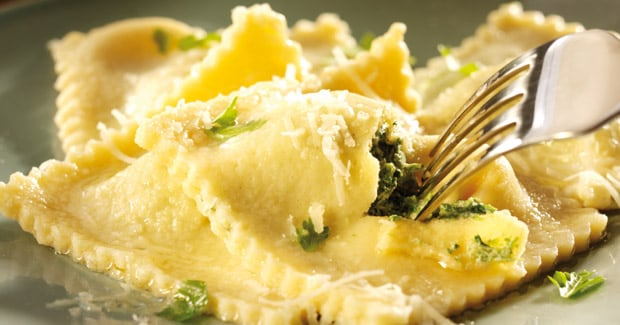

Ravioli met ricotta en spinazie

Ingredienten
- 24 pastavellen, gehalveerd
- 500 g spinazie
- 1 ui, fijngesnipperd
- 1 teentje knoflook, fijngehakt
- 250 g ricotta, verkruimeld
- 4 el pijnboompitten, geroosterd
- 2 eidooiers, losgeklopt
- 100 g boter
- peper en zout
Bereiding
- Stoof de ui aan in een klontje boter. Doe er de spinazie bij en laat 2 minuutjes stoven tot de spinazie is
geslonken. Laat nadien het geheel uitlekken en afkoelen.
- Doe de gestoofde spinazie en ui in een mengkom. Meng er de ricotta door en breng op smaak met peper en zout.
- Leg de helft van de ravioli-velletjes op een werkblad. Bestrijk de randen met eigeel en leg op elk vel een
beetje spinazie-ricotta mengsel. Dek af met de andere helft van het deeg en druk goed aan.
- Kook de ravioli in 2 minuten gaar in gezouten water.
- Laat ondertussen de boter smelten met de knoflook. Leg er de salieblaadjes in en roer om. Kruid af met peper
en zout.
- Haal de ravioli uit het kookvocht voeg ze met aanhangend kookvocht toe aan de botersaus.
- Werk af met de pijnboompitjes en serveer.